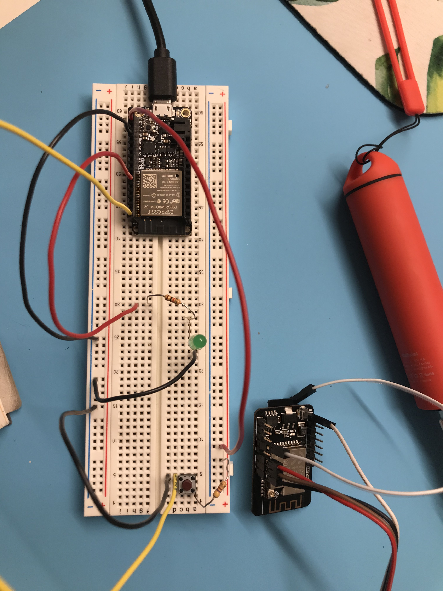

Week 08: Wireless Communications
The Struggle Bus
This week we learned about ESP-NOW communication for microcontrollers such as the ESP32CAM and the Adafruit Huzzah (Feather). For whatever reason (perhaps my almost 33 year-old brain reaching its limit) I really struggled to understand how this communication framework operated, and how to manipulate the code. This was compounded by my difficulties in setting up these boards, as well as by the very limited time I had this week to dedicate to learning all of this new material.
My goal for the week was to learn to do something with the ESP32CAM that involved its built-in SD card capabilities, while also fulfilling the assignment prompt to use wireless or wired communications between two microcontrollers. I wanted to experiment with the SD card because I plan to use that in my final project.
ESP32CAM
I believe that someone evil designed the ESP32CAM because the way to make it work is just bonkers. Or as one of our classmates said in lab on Sunday - "whack." Yes. This is whack. Shout out to Erik Schreiner for pointing out the strange wiring and unwiring process required to get this microcontroller to take code and then run said code.
This Random Nerd Tutorial for setting up the ESP32CAM details this process, but somehow I missed the important note that the IO0 and GND pins on the microcontroller must be wired together for for the microcontroller to receive code. Then to run the code, you must detach these pins from one another and press the reset button. Why? Why? Why?
Since I was also trying to minimize user error, I wanted a very simple code to ensure I could properly upload to the ESP32CAM. This code for operating the built-in LED on the ESP32CAM is buried in the Random Nerd Tutorial pinout page, but it served me well in getting the microcontroller to do something very basic.
void setup() {
pinMode(33, OUTPUT);
}
void loop() {
digitalWrite(33, LOW);
}
Next I wanted to figure out how to take a picture with the ESP32CAM and save that picture to the SD card. Again Random Nerd Tutorials guided me with this tutorial on doing exactly that. First I had to reformat my microSD card. Technically, the ESP32CAM is programmed to run with a 4gb microSD. RNT used a 16gb microSD with no issues, but mine was 32gb. It turned out this wasn't an issue. The tutorial provides code that allows you to take a photo using the reset button on the microcontroller. This meant that all of the code for taking the picture and saving it sat in the setup function. While this works for taking a picture and saving it to an SD card, it make it very difficult for me later on to adjust this code to involve an if() function. Also, even though the cam has a built-in LED for flashing, you need really good lighting to get a decent photo.
// Take Picture with Camera
fb = esp_camera_fb_get();
if(!fb) {
Serial.println("Camera capture failed");
return;
}
This innocent looking code snippet is just part of the 152 lines of code required for taking a picture and saving it to an SD card.
The Huzzah
Unfortunately, I also struggled with setting up the Huzzah microcontroller. This was the result of using the incorrect baud rate in the Serial Monitor (note: it needs to match the setting in the code) but this alone didn't solve my issues. For whatever reason, when trying to upload the SimpleWifiServer example, my serial monitor would read a series of backward question marks, even after fixing the baud rate. After much trial and continued error, I eventually rebooted my computer, and this (insultingly) solve the issue.
After getting the SimpleWifiServer example to work, I decided to work through the tutorial to get my two microcontrollers to communicate, before getting complicated with buttons and photos. I followed the Random Nerd Tutorial for ESPNOW one-way communication and was able to get both micrcontrollers communicating, my Huzzah was the sender and my ESP32CAM was the receiver. I did not however, really understand the example data structure that was provided by RNT and this would later be the cause of much much more strife. I also only have one available USB port that I can use for uploaded code to my microcontrollers, thus the extra time it took to switch between the two when uploading (and the many times I had to quite and reboot Arduino IDE to get it to play nice) meant that everything was taking wayyyy longer than I had planned.
A tale of two microcontrollers
As a reminder, my goal was to press a button on the Huzzah and cause the ESP32CAM to take a photo. I started with the Huzzah and set it up with a button and an LED (to confirm that something was happening, as I can only have one microcontroller feeding the Serial Monitor at once). I adjusted the code from the RNT one-way communication tutorial with an if() function that involved the press of a button. Eventually, I used a pin with an internal pullup resistor, though figuring out which pins could do this AND communicate over ESPNOW was a bit of a battle. With the help fo Victoria and Nathan, however, I figured out that I could use any of the digital pins to do this. My initial approach to combining this code was to wrap the act of sending code into an if() function.
I then turned to the ESP32CAM, and this time combined the receiver code from the RNT tutorial with the code for taking a photo and saving to an SD Card. Again, I thought the easiest way to do this would be to wrap all of the many lines of code for taking a photo and saving it into an if() function where the variable was whether or not a message was received.
I will spare you the pain that I experienced. The code I wrote was really just nonsense. Needless to say, at first I thought it sort of worked. It seemed at least that the Huzzah was sending when I pressed the button, but the delivery was failing. My button nevertheless was still inconsistent, partially due to faulty wiring and partially due to faulty code. I ended up removing the button entirely, just to try and get the ESP32CAM to take a photo if it received data from the Huzzah, but even this didn't work. Then I tried just turning on the built-in LED on the ESP32CAM through ESPNOW and that also failed.
Victoria and Nathan to the Rescue
Thankfully in lab, Victoria and Nathan saved the day. Along the way of my failure to understand what was going on with the ESPNOW communication, I overlooked that Nathan had shared code with a very simple "myData" packet structure that would solve many of my issues. They walked me through how to modify this code to read a button press and then cause the LED on the esp32CAM to light up (below, ignore the LED on the Huzzah set up). VICTORY.

ESPNOW Sender Code - Huzzah Button Press
// ESP-NOW code for sender
// esp32cam is receiver
// huzzah is sender
#include
#include
// REPLACE WITH YOUR RECEIVER MAC Address
uint8_t broadcastAddress[] = {0x7C, 0x9E, 0xBD, 0xC1, 0x1B, 0x40};
//uint8_t broadcastAddress[] = {0x24, 0x62, 0xAB, 0xB0, 0x35, 0xE4}; currently the sender.
int myData = 0;
// callback when data is sent
void OnDataSent(const uint8_t *mac_addr, esp_now_send_status_t status) {
Serial.print("\r\nLast Packet Send Status:\t");
Serial.println(status == ESP_NOW_SEND_SUCCESS ? "Delivery Success" : "Delivery Fail");
}
void setup() {
// Init Serial Monitor
Serial.begin(115200);
//set pin A2 as pullup
pinMode(A2, INPUT);
// Set device as a Wi-Fi Station
WiFi.mode(WIFI_STA);
// Init ESP-NOW
if (esp_now_init() != ESP_OK) {
Serial.println("Error initializing ESP-NOW");
return;
}
// Once ESPNow is successfully Init, we will register for Send CB to
// get the status of Trasnmitted packet
esp_now_register_send_cb(OnDataSent);
// Register peer
esp_now_peer_info_t peerInfo;
memcpy(peerInfo.peer_addr, broadcastAddress, 6);
peerInfo.channel = 0;
peerInfo.encrypt = false;
// Add peer
if (esp_now_add_peer(&peerInfo) != ESP_OK){
Serial.println("Failed to add peer");
return;
}
}
void loop() {
myData = digitalRead(A2);
Serial.println(myData);
// Send message via ESP-NOW
esp_err_t result = esp_now_send(broadcastAddress, (uint8_t *) &myData, sizeof(myData));
if (result == ESP_OK) {
Serial.println("Sent with success");
Serial.println(myData);
}
else {
Serial.println("Error sending the data");
}
delay(1000);
}alWrite(33, LOW);
}
ESPNOW Receiver Code - ESP32CAM LED On
// ESP-NOW code for receiving side
// receiver is esp32CAM
// sender is Huzzah
// based on code from Nathan Melenbrink for potentiometer to servo and adapted for button press to led.
#include
#include
#include "soc/soc.h"
#include "soc/rtc_cntl_reg.h"
int myData = 0;
// const int ServoPin = 2;
// setting PWM properties
// const int ServoChannel = 0;
// const int resolution = 12; //use 12 bits of resolution on both ADC and PWM. Why not.
// callback function that will be executed when data is received
void OnDataRecv(const uint8_t * mac, const uint8_t *incomingData, int len) {
memcpy(&myData, incomingData, sizeof(myData));
// Serial.print("Bytes received: ");
// Serial.println(len);
// Serial.print("byte: ");
// Serial.println(myData);
}
void setup() {
WRITE_PERI_REG(RTC_CNTL_BROWN_OUT_REG, 0); // prevent brownouts by silencing them
// Initialize Serial Monitor
Serial.begin(115200);
//set built-in LED as output
pinMode(33, OUTPUT);
// Set device as a Wi-Fi Station
WiFi.mode(WIFI_STA);
// Init ESP-NOW
if (esp_now_init() != ESP_OK) {
Serial.println("Error initializing ESP-NOW");
return;
}
// Once ESPNow is successfully Initialized, we will register for recv CB to
// get recv packet info
esp_now_register_recv_cb(OnDataRecv);
// configure PWM functionalitites
// ledcSetup(ServoChannel, 50, 12); // 50 hz PWM, 12-bit resolution
// attach the channel to the GPIO to be controlled
// ledcAttachPin(ServoPin, ServoChannel);
}
void loop() {
// ledcWrite(0, 4095 - myData); // this should be replaced with a map() to get a better range
if (myData == 1) {
digitalWrite(33, LOW);
Serial.print("data received!");
Serial.println(myData);
}
else {
digitalWrite(33, HIGH);
}
delay(100);
}